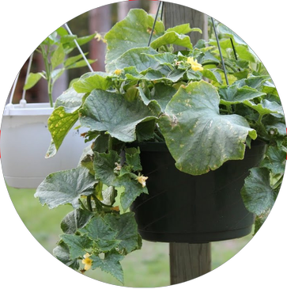
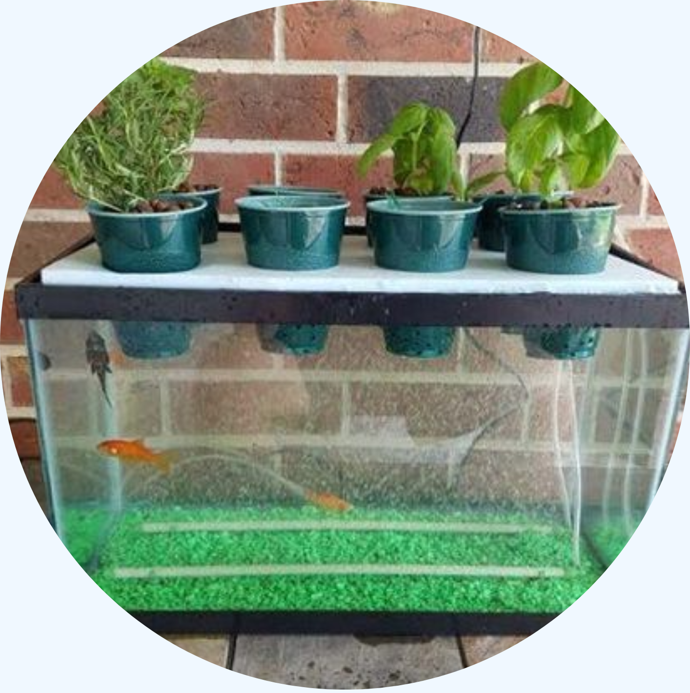
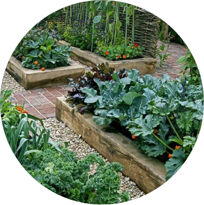
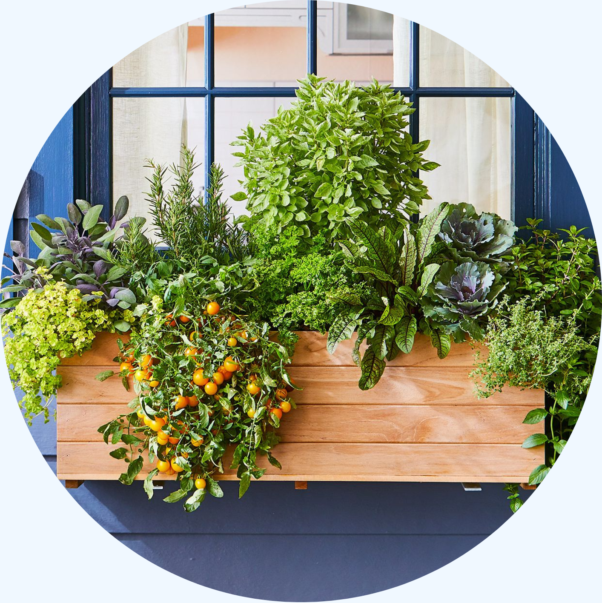
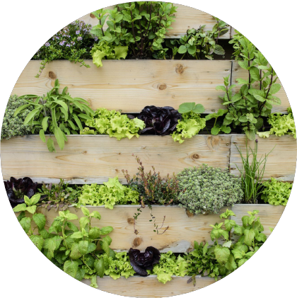
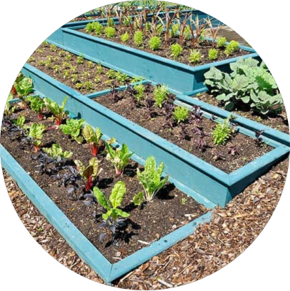

EDIBLE GARDENS AT HOME
It's been 10 years since Gertrude first planted a seed in her garden. Now, it's a flourishing landscape just located in her backyard! You may find it difficult to begin cultivating your journey at home, but not to worry! Here you will find the best tips from Gertrude herself that will hopefully quicken the process for you.
So why bother? There are so many benefits of growing your own edible garden. Below are just select advantages, but there are so many more!
Benefits of a Home Garden |
|
|
|
Things to consider
- how much space you have – an edible garden can be as small as one plant in a pot
- the best place – a sunny position with easy access to water will work well, but many edible plants will also grow well in partial shade
- the nature of your soil – well-draining soil with plenty of organic matter is ideal
- what you would like to grow and eat
- who the garden is for and how they will access it – consider how much room may be required for wheelchair access and whether you will need to construct raised beds
- what you hope to achieve in the garden – you might need space for group activities or meal preparation
- what infrastructure you might like to include – a shed, cupboard or potting bench can be useful for storing materials and potting up plants.
Tips
- If you have a north-facing wall, consider growing suitable plants or vines up the wall in containers.
- Remove weeds regularly as they rob the soil of valuable nutrients, and will compete with your crops.
- Compost most garden materials (leave out the problem weeds), and all vegetable and fruit scraps from the kitchen. Make sure scraps are shredded well before composting.
- Use organic fertilisers.
- Mulch to conserve water.
- Rotate crops regularly (every season or at least every year) to make sure that the soil retains nutrients and the risk of diseases is reduced.
- Use non-chemical remedies such as garlic and chilli spray or milk to ward off pests.
Garden Ideas
| Hanging Baskets | Hydroponic Garden | Raised Beds |
| Window Boxes | Vertical Garden | Tiered Garden |